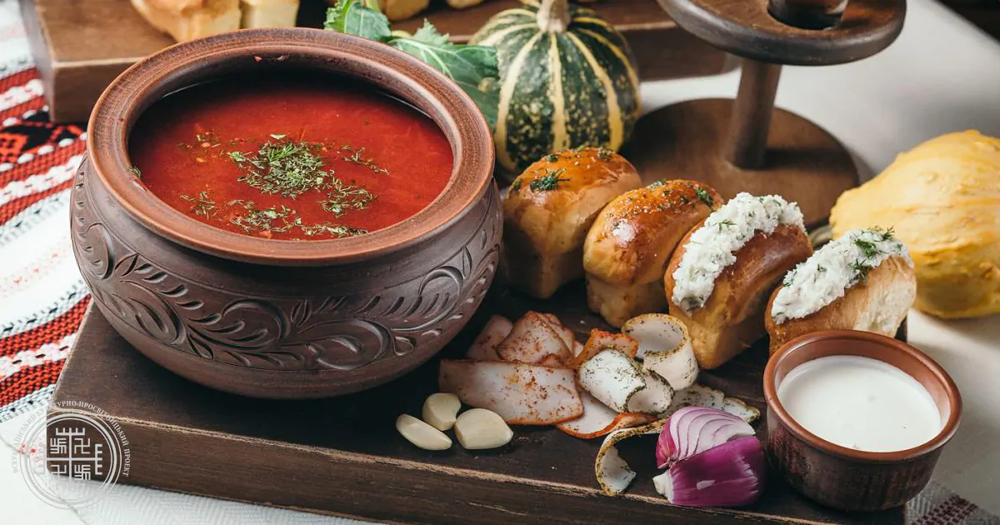
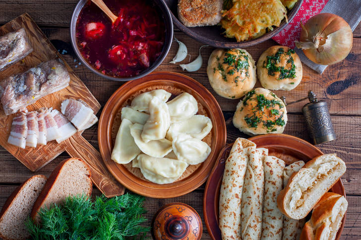
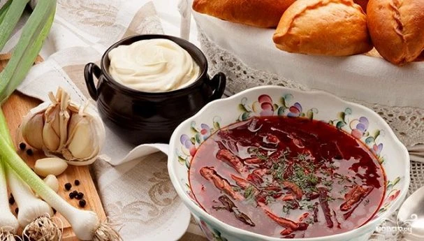
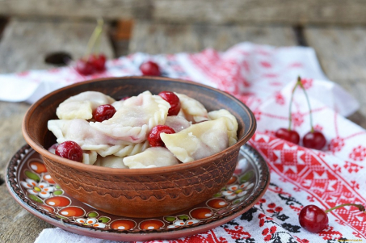
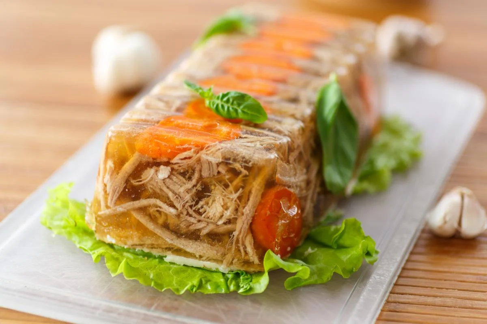
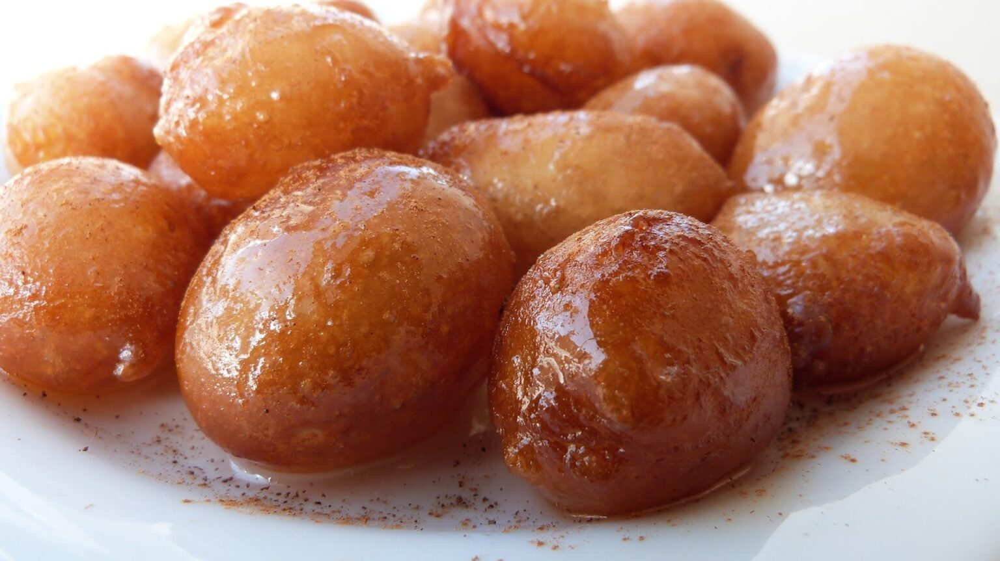
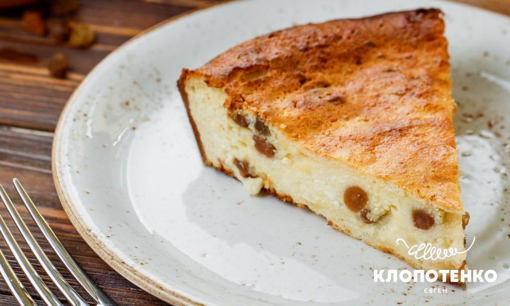
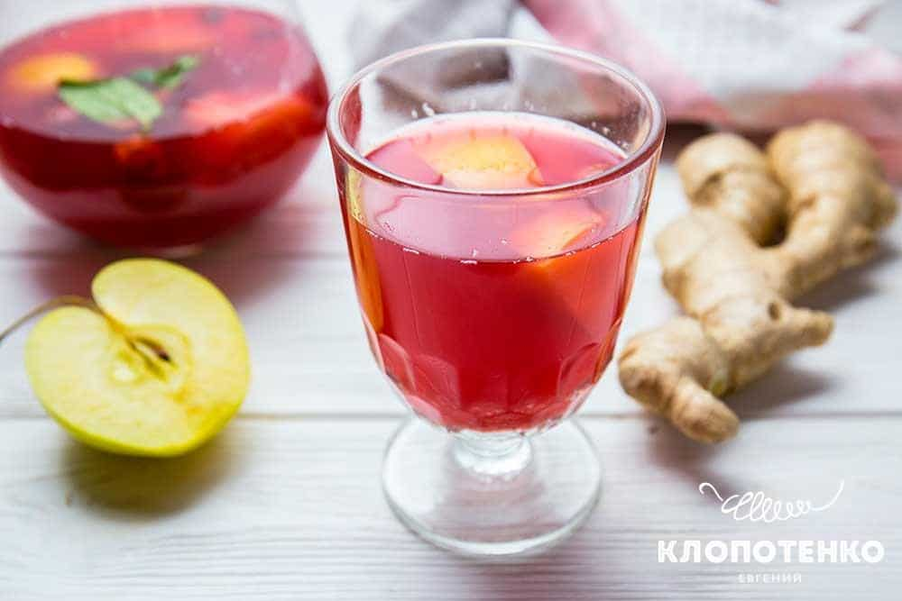
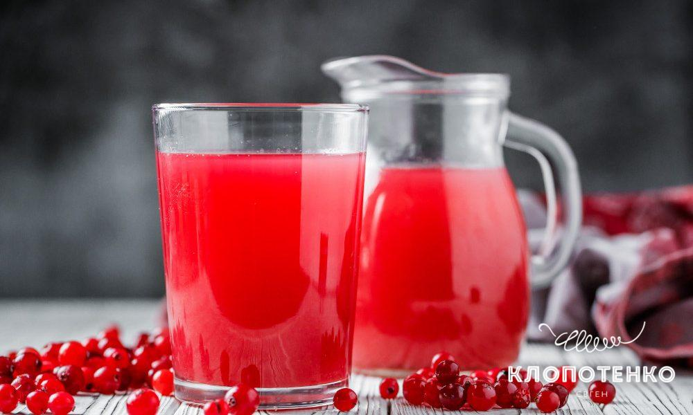

Страви української кухні
Dishes of Ukrainian cuisine
У 2016 році туристичний блог Yonderbound зробив рейтинг найсмачніших
кухонь світу.
Українська гордо увійшла
у першу
десятку, а в Європі була визнана третьою. З того часу популярність наших гастрономічних традицій ні краплі
не
зменшилась. Більше того, кухарі і ресторатори відроджують забуті автентичні страви і дивують ними не тільки
гостей
країни, а й самих українців.
Чим же особлива українська кухня та які національні страви варто спробувати, щоб назавжди запам’ятати, як
смакує
Україна.
Асоціяції смаку
Taste associations
З яким словом у вас асоціюється українська кухня? Всі ці пишні пампушки, ароматне
сало, соковите м’ясо з
печі, картопля
з зеленню, що парує … Смачна, ситна, цікава, самобутня … Все це вірно, але не дозволяє до кінця сформувати
уявлення про
українську кухню. Щедра – ось найбільш точне слово для неї. Столи, які ломляться від домашніх страв і
закусок, ледь
гість переступить поріг будинку господині, відповідні оригінальні рецепти до кожного свята. Млинці на
Масляну, 12 страв
на Різдво, яблучні пироги в честь свята Спаса. І це лише мала частина святкових українських традицій.
Українська кухня ситна і різноманітна. В її основі лежать м’ясо, зокрема, свинина, сало,
різноманітні
овочі.
І ще одна
візитна картка української кухні – це випічка та вироби з тіста. Історія України дуже багата. І вона
знайшла
відображення в кулінарії. Українці завжди займалися сільським господарством, працювали на полях і
городах.
Страви, які
готували сім’ї, були з того, що було під рукою. Вони були наваристими, поживними і часто навіть жирними,
щоб
наповнити
людей силами і витривалістю.
Якщо ви будете подорожувати автомобілем Україною обовязково попробуйте традиційну
Українську кухню. В кожному регіоні вона відрізняється навіть якщо страва одна,але процес самого
приготування та додавання інгредієнтів зовсім іним може бути.
Як готувати страви української кухні?
How to cook Ukrainian cuisine?
Українську кухню люблять у всьому світі. Особливо, її фірмові страви.
Звичайно ж, це борщ, вареники, сирники, пампушки,
копчене або солоне сало. Основні способи приготування – це відварювання і запікання. Справа в тому, що з
давніх-давен
головним атрибутом для приготування їжі була піч. У ній варили каші, картоплю, борщі, тушкували м’ясо і
випікали хліб.
Навіть перебуваючи в степу, козаки або мисливці, піймавши рибу або підстрелив дичину, варили з неї
бульйони і юшки, а не
смажили над багаттям.

Через те, що Україна часто перебувала в стані завоювання різними народами, то в українську кухню
перекочували деякі
традиції сусідніх країн. Так, наприклад, від татар і турків в українську кухню прийшло обсмажування у
великій кількості
розпеченого масла, а від німців використання подрібненого рубленого м’яса. Також характерним для
української
кухні є
використання часнику. З ним печуть пампушки і хліб, додають в борщ, їм шпигують сало і м’ясо. У 19ст в
українську кухню
увійшли баклажани і помідори, які раніше вважалися їжею іноземців, а також буряк. Завдяки цьому з’явилися
ті
рецепти,
які ми любимо й до цього дня.

Рецепти української кухні
Recipes of Ukrainian cuisine
В нашій країні дуже рано проявилася професія кухаря як окреме ремесло. Ще при перших
монастирях були
певні
монахи, які
займалися виключно приготуванням їжі. Пізніше такі кухарі з’явилися і в будинках заможних сімей, і у
знаті.
Саме завдяки
такому розподілу праці формувалася багата і різноманітна українська кухня. Готування їжі перетворилося на
справжнє
ремесло, яке розвивалося, удосконалювалося і перетворювалося в мистецтво. Завдяки монахам-кухарям
з’явилося
безліч
традиційної релігійної випічки і святкових рецептів.
Незважаючи на різноманітність домашньої худоби, а також дичини і риби в лісах і
річках, м’ясні страви
вважалися
святковими. У звичайні дні подавали страви з овочів, тіста і молочних продуктів. Саме тому овочеві страви
і
різноманітна
випічка так сильно розвинені в українській кухні. Рецепти з овочів включають в себе велику кількість
інгредієнтів,
завдяки чому є дуже смачними й незвичайними.
Також окреме місце в українській кухні займає картопля. Її відварюють, запікають з
салом, подають зі
шкварками
або
зеленню, з нею готують пироги та вареники, деруни, зрази. Вона, нарівні з хлібом і кашами, є одним з
головних
гарнірів в
українській кухні.
Вважається, що основу українських кулінарних традицій було покладено ще понад 7
тисяч років тому
трипільцями! Саме тоді
наші пращури навчилися робити хліб, який на тисячоліття став «усьому головою». Спочатку він був прісним,
потім навчилися
робити закваску, перші вироби були з житнього борошна, але в різних регіонах України до нього додавали
різні
інгрідієнти, що сприяло неймовірному різноманіттю. Свідченням цьому є навіть листи Бальзака, в яких він
писав: «…Як ви
приїдете на Україну, в цей рай земний, де я запримітив уже 77 способів приготування хліба».
Феномен української кухні в тому, що вона одночасно і цілісна, і має регіональне різноманіття. Через те,
що
наші землі
довгий час були частинами різних держав і перебували під впливом різних народностей, культурні
особливості
регіонів
формувалися окремо один від одного.
Значну роль відігравали також географічні фактори. Наприклад, на Західній Україні
більш
поширеними були
продукти
вівчарства, а на Поліссі – страви з картоплі. Але незважаючи на це, по всій території ми маємо досить
однорідний набір
харчової сировини ( свинина, сало, буряк, пшеничне борошно, бобові, рослинна олія) і спосіб її обробки.
Традиційні
українські страви переважно варені, тушковані і печені. Адже саме ці маніпуляції з їжею проводили в печі.
А
найпоширенішими способами зберігання продуктів було соління та квашення. Чого тільки варті ніжинські
огірочки, які
вагонами експортувалися в 56 країн світу, у тому числі і на стіл британської королеви!
Популярні страви української кухні
Popular dishes of Ukrainian cuisine
Борщ
Borsch

Як приготувати Борщ?
Кількість порцій: 3-4
Час приготування: 40 хв.
Без сумнівів, борщ зі шкварками в домашніх умовах повинна вміти приготувати кожна господиня! Нехай це
стане
вашим
коронною стравою — рідні та гості з однаковим захопленням оцінять вашу майстерність!
Опис приготування:
Цей рецепт приготування борщу зі шкварками я зазвичай згадую в тих випадках, коли
готового бульйону
немає, а
на його
готування часу катастрофічно не вистачає. Але не відмовлятися ж через це від приготування першого і
основного блюда? А
так у нас вийти такий собі пісний легкий борщ, з додаванням “; шкідливого” компонента смаку — шкварок.
приступимо?
Як приготувати борщ зі шкварками:
- 1. Для початку підготуємо всі овочі. моєму, чистимо і ріжемо картоплю, цибуля, морквину, часник і
буряк.
Морквину і цибулю
можна подрібнити в блендері, часник пропустити через прес, а всі інші інгредієнти нарізати невеликими
кубиками.
- 2. Ставимо на вогонь воду, додаємо в неї буряки, і доводимо до кипіння, після чого закидаємо картоплю
і
варимо до його
готовності.
- 3. Тим часом на рослинній олії обсмажити моркву і часник з томатною пастою.
- 4. Шаткуємо дрібно капусту, додаємо до бульйону. Суміш зі сковорідки теж всипаємо. На невеликому
вогні
знову ж доводимо до
кипіння.
- 5. солимо, перчим, і додаємо спеції за смаком. Цікавий відтінок додасть такому борщу гвоздика і
каррі.
Знімаємо з вогню.
- У тій же сковороді, де ми готували морквину, на маленькому вогні Томім сало, нарізане вузькими
смужками,
щоб виділився
жир. додаємо цибулю, і обсмажуємо разом, поки цибуля не стане золотистим.
Готово! Тепер можна розсипати такий пісний борщ по тарілках, а окремо подавати шкварки і сметану, — щоб
догодити всім і
кожному, так би мовити. Звичайно ж, це не класичний рецепт борщу зі шкварками, але ж ніхто вам не заважає
удосконалити
його за власним бажанням! приємною готування!
- Буряк — 3 шт
- Морква — 1 шт
- Цибуля — 1 шт
- Картопля — 3 шт
- Капуста — 100 гр
- Сало — 200 гр
- Часник — 2 зуб.
- Томатна Паста — 3 ст.л
- Масло Рослинне — 2 ст.л
- Сіль — 1 щіпка
- Перець — 1 щіпка
- Спеції — 1 щіпка
Вареники з полуницею
Varenyky with strawberries

Ми вирішили робити саме заварне тісто, бо воно виходить ніжним та м’яким – те що треба до
примхливої
полуниці. Як саме
зробити тісто ідеальним – є варіанти. Звісно, якщо чітко дотримуватися рецепта, все вийде. Але якщо ви
хочете прям
відчути тісто, можна зробити так: спочатку змішайте ложкою 200 г борошна із 200 мл води, а потім
поступово
домішуйте ще
борошна. Додавайте потроху, вимішуйте руками, аж поки не зрозумієте, що тісто вже достатньо еластичне та
має
правильну
консистенцію для вареників. Після цього ви станете із тістом «на ти».
Ми вирішили робити саме заварне тісто, бо воно виходить ніжним та м’яким – те що треба до
примхливої
полуниці. Як саме
зробити тісто ідеальним – є варіанти. Звісно, якщо чітко дотримуватися рецепта, все вийде. Але якщо ви
хочете прям
відчути тісто, можна зробити так: спочатку змішайте ложкою 200 г борошна із 200 мл води, а потім
поступово
домішуйте ще
борошна. Додавайте потроху, вимішуйте руками, аж поки не зрозумієте, що тісто вже достатньо еластичне та
має
правильну
консистенцію для вареників. Після цього ви станете із тістом «на ти».
Холодець
Aspic

Холодець корисно їсти, за умови, що він не жирний, тобто приготований з курятини.
Холодець містить в собі
багато
мікроелементів і також колаген (відповідає за пружність шкіри і м’язових тканин), який зараз дуже
популярно
і корисно
вживати.
Вона вважає, що якоїсь конкретної норми споживання холодцю немає, тому що для кожної людини повинна бути
різна добова
калорійність. Але точно немає необхідності їсти кожен день холодець, тому що колаген є і в інших стравах.
Тому їсти
варто в міру і пам’ятати про співвідношення білків, жирів і вуглеводів у вашій тарілці.
- Свиняча голяшка – 1,8 кг
- Теляча голяшка, м’якоть – 1,8 кг
- Часник – 8 зубків
- Морква – 400 г
- Цибуля ріпчаста – 700 г
- Лавровий лист – 2 гілочки (приблизно 10 шт.)
- Зелень петрушки – 10 г
- Сіль (морська) – за смаком
- Перець чорний горошком – 2 ст. ложки
- Запашний перець горошком – 15 шт.
- Вода – 6 л
Налити в каструлю воду, довести до кипіння, потім покласти м’ясо. Зменшити вогонь і залишити на 20-30
хвилин, до тих
пір, поки не утворюється пінка. Зібрати її і додати в бульйон цибулю, моркву, лавровий лист, перець і
сіль.
Залишити
нудитися на повільному вогні 6 годин, потім дістати цибулю і варити ще 4 години.
Дістати моркву з бульйону, м’ясо також витягти і охолодити. Процідити бульйон через марлю або сито.
Розчавити часник і
додати його в бульйон, в разі потреби посолити. Форму для холодцю застелити харчовою плівкою, м’ясо
розібрати на
шматочки.
Викласти листя петрушки на форму, зверху покласти м’ясо. Залити все бульйоном і поставити в холодильник.
Застиглий
холодець накрити тарілкою і перевернути.
Пампушки
Dumplings

Використовуйте продукти з доданого списку, чітко дотримуючись інструкції, і у вас
обов’язково будуть
чудові
пончики,
якими зможете порадувати своїх близьких!
- Борошно – 250-300 г;
- Молоко – ¼ склянки;
- Дріжджі – 25 г свіжих або 11 г сухих;
- Сіль – ¼ ч.ложки;
- 1 яйце або 2 жовтки;
- Цукор – 3 ст. ложки;
- Вершкове масло – 50 г або 75 г маргарину;
- Білок для змащення – 1 шт;
- Цукор або цукрова пудра для посипання;
- Начинка – 0,5 склянки (джем або повидло);
- Рослинна олія для смаження.
Можна обійтися і без начинки, зробивши інший різновид пончиків – пампушки. Для цього розкачайте шматочки
тіста в
ковбаски, з’єднайте їх в кільця, посмажте в маслі і викладіть на паперовий рушник, щоб стік жир. Готові
пампушки посипте
цукровою пудрою.
Але ми не шукаємо легких шляхів і будемо готувати пончики з начинкою. В якості начинки, можна взяти і
варене
згущене
молоко, і запарений мак, заварний крем і т.д.
Насамперед приготуємо опару, для цього дріжджі розтираємо з 1 чайною ложкою цукру. У тепле молоко,
відправляємо дріжджі
з цукром, ½ борошна, все перемішуємо і накриваємо все рушником. Ми залишаємо опару на 15-20 хвилин в
теплому
місці.
Коли опара підійшла, додаємо в неї розтоплене вершкове масло, але не гаряче, решту борошна і яйця з
цукром.
Попередньо,
рекомендую, яйця збити з цукром і відправити до опари вже сумішшю. Вимішуємо тісто руками, поки воно не
перестане
липнути. Тісто накриваємо рушником і залишаємо підніматися на 30 хвилин.
Тісто, що підійшло обминаємо і розгортаємо в пласт товщиною 5 мм. Склянкою вирізаємо кружечки, по центру
кожного
викладаємо начинку. Зверху закриваємо ще одним кружечком і защипуємо краї. Готові пончики залишаємо в
теплому місці на
15 хвилин, для вистоювання.
Тепер займемося смаженням наших пончиків. У глибокій сковороді з товстим дном розігріваємо до 180-200
градусів рослинне
масло. Обсмажуємо в маслі пончики з обох боків до золотистого кольору, викладаємо готові пончики на папір
або сито, щоб
з них стік зайвий жир. Ще гарячі пончики змащуємо збитим білком, і обвалюємо у цукрі або просто посипаємо
цукровою
пудрою. Наші пончики готові, смачного!
Класична запіканка у духовці
Classic casserole in the oven

Здається, неможливо уявити людину, яка може відмовитися від шматочка сирної запіканки. Це божественна
страва,
яка від
своєї ніжності просто тане у роті. Її їси, немов легку хмаринку. До того ж це корисний і апетитний сніданок,
і
хороший
перекус, який можна взяти з собою в дорогу чи на роботу. Також сирна запіканка добре виручатиме, коли не має
бажання
готувати щось ввечері – додаєте до страви сметану, ягідний джем чи варення та буде ідеальна вечеря.
Робити сирну запіканку дуже просто. Ми пропонуємо рецепт класичної запіканки без додавання манки. Також
радимо
скористатися ще одним смачним варіантом – сирною запіканкою з бананом, насиченої ароматом та смаком
тропічного
фрукта.
Вона теж випікається без манної крупи.
Сир. Виберіть добре віджатий кисломолочний домашній сир, або придбайте у супермаркеті той,
що
має не менше 9 % жирності.
Щоб досягти максимально оксамитової текстури запіканки, сир виберіть дрібнозернистий. Якщо так станеться,
що
він з
великими комочками, то краще перебити його блендером чи, за його відсутності, пропустіть один-два рази
крізь
сито. Це
займе трохи більше часу, ніж з блендером.
Родзинки. Сухофрукти добре доповнюють смак запіканки. За бажанням, замість солодких
родзинок,
можна додати
кисленьку
в’ялену вишню, журавлину чи курагу. Можна зробити й мікс за необхідності. Щоб ви не обрали, сухофрукти
варто
помити та
висушити. Перед приготуванням сирної суміші промийте їх та залийте гарячою водою. Через п’ять хвилин
злийте
воду, щоб
вони сильно не розкисли, та промокніть паперовим рушником. Як родзинки просохнуть, додайте їх до тіста
запіканки.
Напої української кухні
Drinks of Ukrainian cuisine
Багатством відрізняються не тільки страви української кухні, а й напої. Серед них всілякі узвари –
корисні і
солодкі
компоти із сухофруктів або ягід. До речі, узвар також є традиційним представником різдвяного столу. Дуже
популярні в
українській кухні напої, які виходять шляхом бродіння – квас, меди, пиво. З тих пір, як в Україні
прижився
буряк, цукор
став невід’ємною частиною кулінарії. Збільшився асортимент не тільки десертів, але і напоїв. Горілка,
наливки, варенуха,
вино і різні настоянки подаються на багатий український стіл в такому ж достатку, як і страви.
Не дарма українська кухня так популярна в усьому світі. Вона щедра, багата, різноманітна. У кожному
рецепті
відчувається
українська душа, відображається наш менталітет і гостинність, сердечне тепло, з яким в українців прийнято
зустрічати
гостей. Якщо ви ще цього не зробили, то вам потрібно обов’язково познайомитися ближче з українською
кухнею.
Вона варта
того! Спробувавши національні страви, ви не зможете їх забути, і назавжди збережете в собі частинку
українського тепла і
привітності разом з нашими традиційними рецептами!
Морс із журавлини

Морс – терпкий освіжальний напій, який легко приготувати з диких або культивованих ягід. Ми
пропонуємо
класичний рецепт
з журавлини. А зробити його більш насиченим допоможе апельсинова цедра та сік цитруса. Найкраще напій
смакує
охолодженим, тому радимо подавати у графині з кубиками льоду та листочками м’яти.
Ми радимо не використовувати багато цукру для морсу, щоб залишити його оригінальний смак з впізнаваною
кислинкою. За
бажанням цукор замініть медом, який слід додавати в кінці приготування. Так ви отримаєте максимально
натуральний напій.
Якщо хочете урізноманітнити смак морсу, додайте малину, чорну смородину, ожину чи обліпиху. Всі ягоди
використовуйте
свіжими чи замороженими.
Також радимо приготувати ще вишнево-яблучний морс з імбиром, який ідеально доповнить м’ясні страви та
десерти.
Вишнево-яблучний морс із імбірем

Ягніді морси – відмінний напій, що втамує спрагу і взимку і влітку, а також розумна
альтернатива будь-якому
магазинному
напою. Морс можна варити з будь-яких ягід, а при нинішньому асортименті замороженої продукції це взагалі
не
проблема.
Мені найбільше подобається вишневий. А ще мені подобається додавати в напої свіжий імбир – це надає їм
приємну гостроту,
крім того – це шалено корисно. Саме те, що потрібно для зимової погоди.